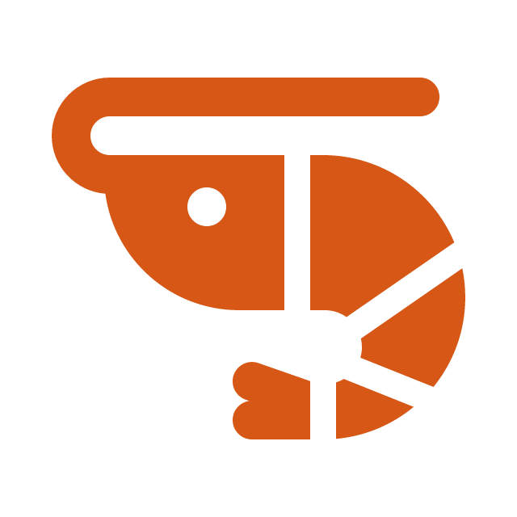
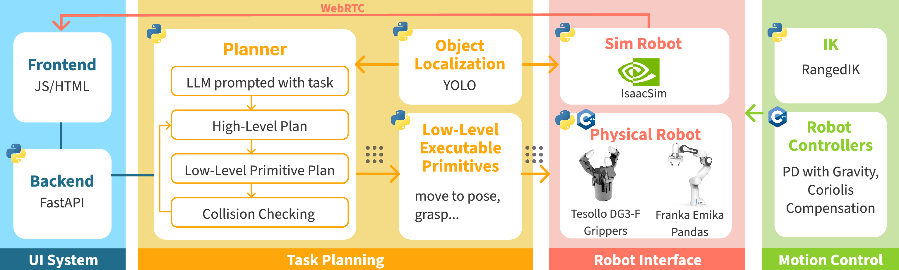

SHRIMP: Iterative Refinement of Robot Task Plans
Simulation-driven Human-in-the-loop Refinement Interface for Manipulation Planning
Abstract
As collaborative robots have entered domains such as manufacturing, agriculture, and healthcare, programming or adapting robot behavior typically requires robotic expertise that most end users lack. Natural language lowers this barrier. Recent advancements in large language models (LLMs) have made it feasible to translate natural language into robot task plans. However, language-based task specification can suffer from semantic ambiguity, and generative models lack transparency for how language instructions are translated into robot actions, making it difficult for users to validate plans before execution. To address these issues, we introduce SHRIMP: Simulation-driven Human-in-the-loop Refinement Interface for Manipulation Planning. SHRIMP allows users to automatically generate a hierarchical robot primitive plan using natural language and iteratively revise their plan through re-prompting and explicit correction. At each revision, SHRIMP allows users to validate their plan in simulation, and once satisfied, execute it on the physical robot. Through a user study involving participants planning tabletop kitchen tasks (N = 35), we validate that SHRIMP improves perceived control and enhances robot transparency.
Architecture
